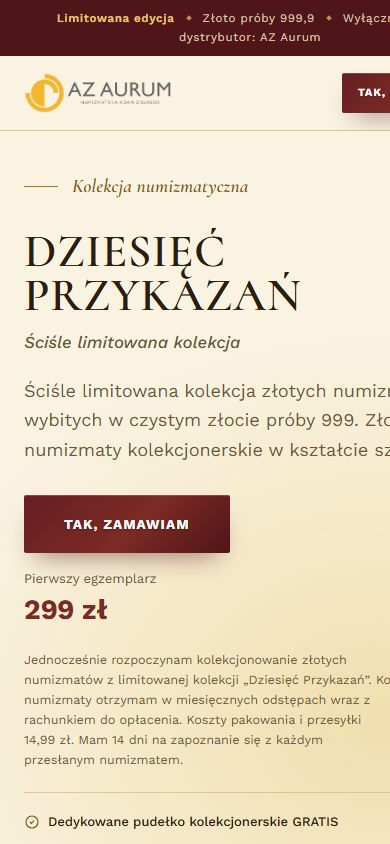

Miastometr
Portal z danymi
Porównywarka polskich miast oparta na publicznych danych GUS i GIOŚ. Wynagrodzenia, ludność, bezrobocie i jakość powietrza podane tak, że rozumie je każdy.
Zobacz stronę na żywoPrzemysław BorkowskiWeb designer & developer
Tworzę strony i narzędzia internetowe od projektu po publikację. Szybkie, czytelne na każdym ekranie i nastawione na to, żeby klient wiedział, co ma zrobić.
Każdy projekt działa online. Kliknij, żeby zobaczyć go na żywo, na komputerze albo w telefonie.
Portal z danymi
Porównywarka polskich miast oparta na publicznych danych GUS i GIOŚ. Wynagrodzenia, ludność, bezrobocie i jakość powietrza podane tak, że rozumie je każdy.
Zobacz stronę na żywo

Landing page sprzedażowy
Strona kampanii kolekcji złotych numizmatów dla AZ Aurum. Jedna oferta, jasna ścieżka do zamówienia i elementy budujące zaufanie.
Zobacz stronę na żywo

Strona firmowa
Strona salonu w Kościerzynie: przejrzysty cennik, galeria i szybkie umawianie wizyt. Zaprojektowana najpierw pod telefon.
Zobacz stronę na żywo

Narzędzie online
30 wzorów pism i dokumentów: CV, wypowiedzenia, pełnomocnictwa. Użytkownik wypełnia formularz i od razu pobiera gotowy PDF.
Zobacz stronę na żywo

Strona firmowa
Wizerunkowa strona barbershopu. Ciemna, rzemieślnicza identyfikacja, oferta usług i rezerwacja.
Zobacz stronę na żywo

Strona marki
Rzemieślnicze krówki z logo firmy. Strona prowadzi klienta biznesowego od wyboru smaku do zamówienia na event.
Zobacz stronę na żywoNazywam się Przemysław Borkowski. Projektuję strony tak, żeby odwiedzający od razu wiedział, gdzie jest i co ma zrobić, a potem sam je koduję i publikuję.
Robiłem kampanie sprzedażowe dla kolekcji złota, strony lokalnych firm, darmowe portale z narzędziami i aplikacje, które skracają pracę zespołu. Jedna osoba odpowiada za cały projekt: od rozmowy o celu po działającą stronę pod prawdziwym adresem.
UI/UX, typografia, kolorystyka, projekt pod telefon od pierwszego szkicu.
HTML, CSS, JavaScript, TypeScript, React, Next.js, Tailwind CSS.
Hosting, SEO techniczne, wydajność, dostępność.
Publiczne API (GUS, GIOŚ), generowanie PDF, kalkulatory.
Cztery etapy. Na każdym wiesz, co się dzieje i co dostaniesz.
Poznaję Twoją firmę, klientów i cel strony. Ustalamy zakres i termin.
Pokazuję układ i wygląd strony, najpierw na telefonie. Wprowadzam Twoje uwagi.
Koduję stronę ręcznie: szybką, dopracowaną w detalu i gotową pod Google.
Publikuję stronę pod Twoim adresem i szybko wprowadzam poprawki po starcie.
Opisz krótko, czego potrzebujesz. Odpowiem z propozycją rozwiązania i terminem.